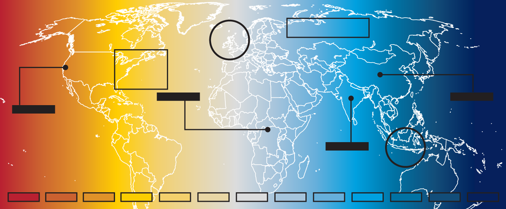
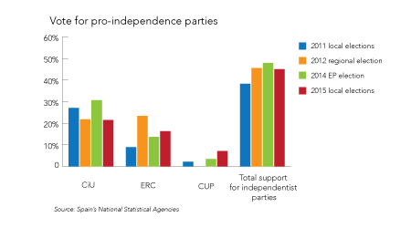
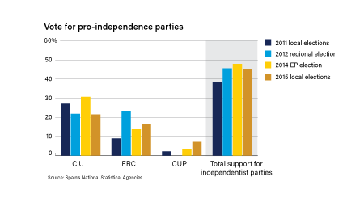

Case study
EG Data Visualization System
Building a chart system from the ground up, simultaneously with a full rebrand, across multiple environments, for a team of 30-plus analysts.

Top Risks, EG's flagship annual publication — the most visible application of the chart system.
The situation
Eurasia Group had just gone through a full rebrand. New identity, new colors, new direction. But none of that had made its way into the data work yet. I came in right as the rebrand was landing, which meant there was no clean starting point. We were figuring out the standards as the organization was already moving.
The problem
The charts felt dated. Technically they were fine, but they looked like something out of a financial terminal. Dense, generic, no real point of view. They weren't keeping up with where EG was trying to go.
On top of that, the same charts had to work in very different places. A PDF is fixed. An email gets opened on a desktop, a phone, a tablet, a web browser, and each one renders it differently. Getting that right meant figuring out the exact sizes where a chart would hold up everywhere, then building the typography around those numbers so nothing fell apart at smaller sizes.
The scale problem was harder. My team was two to five people. There were 30-plus analysts across the organization building their own charts, mostly outside our workflow. I couldn't review everything. Whatever we built had to be usable by people who weren't designers.

Before: dense, generic, no editorial voice.

After: cleaner, on-brand, direct headline.
What I built
I started with sizing. Before color, before anything else, I worked out the dimensions a chart needed to survive every environment it would show up in. Typography followed from those numbers so that text stayed legible without anyone having to make judgment calls about it.
Color came later, through a lot of trial and error. We worked through combinations until we had a palette that felt right for the new brand, held up across different chart types, and met accessibility standards for contrast and colorblind use.
From there we started making calls about clarity. Spaghetti charts went away. We added light horizontal reference lines so readers could track across an axis without losing their place. Chart type selection became more intentional rather than defaulting to whatever was easiest.
Calculated sizes across PDF, email, and web.
Accessible palette derived from the rebrand.
Before and after — spaghetti to structured.
For analysts using Macrobond, I built out specifications that kept their work structurally in line with ours. That tool actually helped enforce things because its constraints worked in our favor. Excel was a different story. Without any automation to hold the format in place, charts drifted. I built templates and documented the standards, but without finishing the macro toolkit we had started, there was nothing keeping it consistent beyond someone choosing to follow the rules.
Accessibility was part of the system too. Contrast ratios, colorblind-safe pairings, legibility at small sizes. Getting consistent adoption across the analyst team was tough. It required time and organizational attention that was hard to come by.
What it touched
The system ran through everything we produced. The most visible place was Top Risks, EG's flagship annual publication. It gets read by heads of state, C-suite executives, and senior policymakers. Getting the visual language right there mattered in a way that's hard to quantify. Top Risks is not just a research product. It's a credibility signal. It has to look like it belongs in the room where it ends up.
Top Risks 2024 — charts produced under the system.
What I learned
Designer adoption was solid. Analyst adoption was mixed, and the reason was structural. Macrobond kept people in line because the tool itself enforced the constraints. Excel didn't, and without finished automation there was no mechanism beyond personal discipline.
The gap between building a design system and getting people to actually use it is the real problem most organizations have. It's not usually a design problem. It's an infrastructure problem. That's where a lot of my focus is now.